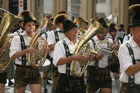

Oktoberfest - Munich
Germany’s Oktoberfest in Munich is perhaps the most legendary beer-swill on Earth. Wondering
why? This annual beer festival draws a record-breaking crowd of more than 6 million
including the locals and international tourists. Almost 7 million litres of beer are being
consumed and over a hundred wild oxen are grilled during the fest. People munch through
thousands of roasted chickens, grilled pork sausages and giant pretzels. The fresh and
savoury aroma of the grilled meat drifts all over the festival ground, which is simply hard
to resist.
Oktoberfest is a celebration of Bavarian beer and lasts for 16 to 18 days and takes place
around mid-September to the first Sunday of October. The fest was celebrated in 1810 for the
very first time in the honor of the marriage of Bavarian Crown Prince Ludwig to Princess
Therese von Sachsen-Hildburghausen.
Karneval-Cologne
Situated on the mighty Rhine River, Cologne is one of Germany’s oldest cities. It houses the
UNESCO-listed Cathedral (Kölner Dom) of Cologne, an incredible example of Gothic architecture.
Karneval in Cologne is one of the biggest street German festivals, with over a million people
out on the streets to watch the colorful parade and marching bands.
Crazy costumes, amazing events and over 70+ floating boats are surely the major highlights of
this Karneval. There are parties in every corner of the city, right from pubs to public squares
and restaurants. So, if you are searching for a fun-filled vacation, then do visit the Karneval.
Beethovenfest - Bonn
This is a breathtaking festival that introduces people to Germany’s classical music, dedicated
to the legendary music of Ludwig van Beethoven. The year 2022 is going to mark the 250th birth
anniversary of this legendary artist. This annual event features more than 70 concert
performances by some of the world’s best orchestras, ensembles, soloists, etc. This is a
paradise for music lovers.